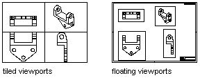

Viewports control which objects are displayed on screen and when outputting a drawing.
When working in model space you draw geometry in tile viewports (referred to as Viewport objects in ActiveX Automation). You can display one or several different viewports at a time. If several tiled viewports are displayed, editing in one viewport affects all other viewports. However, you can set magnification, viewpoint, grid, and snap settings individually for each viewport.
In paper space, you work in floating paper space viewports (referred to as PViewport objects in ActiveX Automation) to contain different views of your model. Floating viewports are treated as objects you can move, resize, and shape to create a suitable layout. You also can draw objects, such as title blocks or annotations, directly in the paper space view without affecting the model itself.

To access the model in a PViewport object, toggle from paper space to model space using the ActiveSpace property.
From model space, you can switch to the last active paper space layout.
From paper space, you can switch to model space floating viewports or model space tiled viewports.
Paper space viewports are created with the AddPViewport method.
The view within a Viewport object can be changed while you are in model space and the viewport is active.
Before you plot, you can establish accurate zoom scale factors for each section of your drawing.
In paper space, you can scale any type of linetype in two ways. The scale can be based on the drawing units of the space in which the object was created (model or paper).
If your drawing contains 3D faces, meshes, extruded objects, surfaces, or solids, you can plot from paper space using the As Displayed, Wireframe, Hidden, and Rendered options.